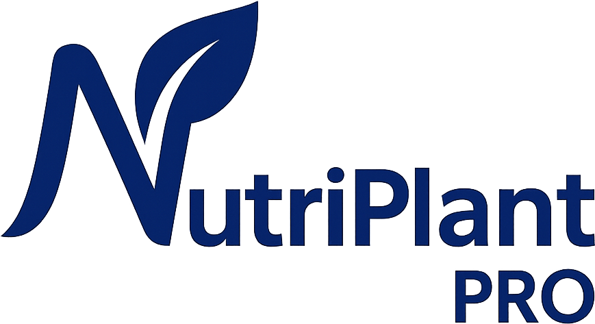

Modo gratuito: no guarda datos. Al cerrar, la calculadora se reinicia.
🧪 Solución nutritiva por etapa

📐 Diagrama ternario (aniones + cationes)
Rangos por elemento (%). Aniones: N-NO₃⁻ 20–80, P-H₂PO₄⁻ 1.25–10, S-SO₄²⁻ 10–70.
Cationes: K⁺ 10–65, Ca²⁺ 22.5–62.5, Mg²⁺ 0.5–40.
El % de NH₄⁺ se calcula sobre el total de cationes (K+Ca+Mg+NH₄⁺) y no entra en el triángulo.